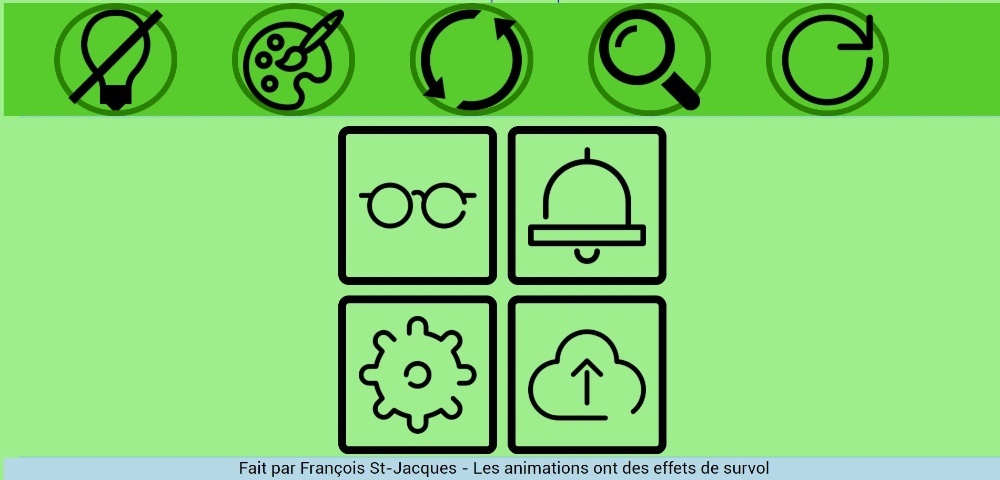

Programmation web
HTML/CSS/JavaScript
Étudiant en multimédia au Collège de Maisonneuve (2017-2021), j'ai appris les rudiments de la programmation web et appris à aller plus loin. En quatre ans d'études, je codes en HTML/css et JavaScript. J'ai utilisé WordPress pour refaire le site du département. Mon site est refaite avec Reveal.js.
Pour connaître la raison de mon amour pour les chats
Retour à la page d'accueil
Animation de base en css Ferme Auteuilloise
Voir plus
Page d'accueil du TIM Space Invader
À propos

Étudiant en multimédia (2017-2021)
(La suite de la présentation des chats suit plus bas)
(On remonte sur la première ligne horizontale)